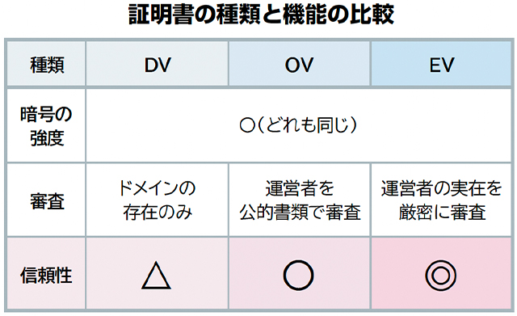

暗号化した先は信用できるの？（SSLの【認証】とは？）②
前回ご紹介した【認証】の3タイプを、もう少し詳しくご説明しましょう。
■ドメイン認証（DV：Domain Validation）
まず、費用が安く取得も簡単なのが、無料版もある「ドメイン認証（DV）」タイプです。
これは、ドメインが存在することだけしか確認していないと考えてよいでしょう。
つまり、実在しない会社や、悪意ある個人でも取得できてしまうのです。
フィッシング詐欺などの犯罪をしようとしている側から見れば、
正規サイトっぽさを演出できて、好都合ですよね。
■組織実在認証（OV：Organization Validation）
信頼性の確認を行っているのが、「組織実在認証（OV）」です。
組織が法的に実在しているかどうかを確認します。
現実世界の情報、例えば、住所や電話番号などを公的な情報と照合するので、
ライセンスの発行に手間がかかり、その分で費用は高くなりますが、
「ちゃんとした法人がこのサイトを運営している」という証明になります。
ちなみに、私たちウェブマスターズも、このOVレベルの証明書を使用しています。
■拡張認証（EV：Extended Validation）
最も信頼性の高いのが「拡張認証（EV）」です。
組織が現実に存在していることまでを確認します。
登記簿謄本などの法的書類の提出に加えて、
電話であれば架けてみる、住所であれば送ってみる、というように、
現実に実在することを厳密に確認します。
人が訪ねてくることもあるとか、ないとか、、、
犯罪者から見れば、実在する住所や電話番号は知られたくないですから、採用しにくい。
偽サイトに利用されやすい金融機関や大企業などで非常に有効です。

今後、インターネット上の詐欺やなりすましといった犯罪は、ますます増えるでしょう。
SSL証明書の選択が、そういった犯罪に巻き込まれるリスクを低減する可能性があります。
また、SSLを装備することが事実上の必須となったように、
証明書レベルをOV以上にすることが必須となることも予想できます。
先行して採用すれば、サイトの運営者としての責任感や姿勢の表れにもなるでしょう。
※ 「SSL」は正式には「TLS（Transport Layer Security）」と呼ばれますが、一般的な呼び名として「SSL」を使用しています。